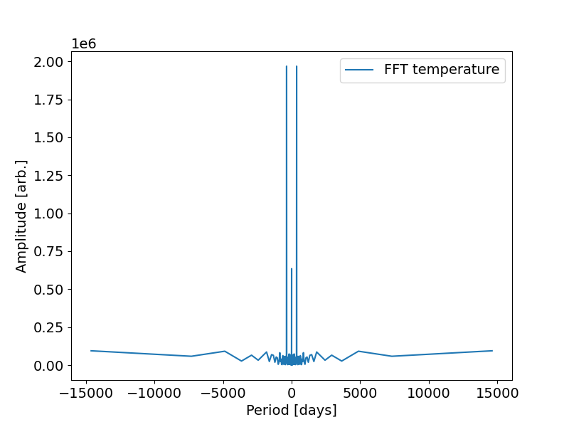

Data Analysis and Visualization in Python¤
Python is a powerful tool nowadays used as industry standard for data science. It is also relatively easy to use. This tutorial is by no means an exhaustive set of usecases, its purpose is merely to demonstrate some of the many useful features of python and its libraries. In the following paragraphs we will learn how to load, process and visualise our data with some standard libraries like:
-
Numpy - Array (vectors, matrices, etc.) manipulation - addition, multiplication and other operations between arrays, applying functions to arrays and much more,
-
Matplotlib - plotting and saving images of many kinds,
-
Scipy - fitting, extremization of functions, statistics, etc.,
-
Pandas - data input and output.
Sometimes when many files spread across several directories are used, Pathlib can be very useful for their management. The general structure of a python file will look the following way:
Loading data from files¤
Depending on the complexity of our dataset, several approaches can be used. Rarely ever is the standard python open() function an optimal choice. When a simple csv file with only number inputs is to be loaded, numpy.genfromtxt() is a good option. It converts space separated data into a numpy array which can then be further manipulated. For larger datasets or more complex datatypes pandas offers several read-type functions (among which read_csv() is an option as well). Let's now try loading a simple shopping list.
import pandas as pd
# Function definitions usually come first with the 'main()' function on top. For better readibility are individual functions separated by two spaces.
def main():
#load data
filename = 'novy_nakup.csv'
df = pd.read_csv(filename, sep = '\t') #df stands for dataframe, 'sep' stands for separator of our values (tabulator in this case). For a complete list of arguments see the official documentation
#calculate the final price of our grocery list
sum = df['mnozstvi'] * df['cena_za_jednotku'] #this is a elementwise product of two arrays, basic opperations are implemented into the dataframe so no looping is required
sum = sum.sum() #python is dynamically typed so you can seamlesly change the sum variable from dataframe to a number. The sum, max, etc. methods are also implemented
#printing the grocery list and the total cost
print(df['polozka'].tolist(), sum) # the tolist() function converts dataframe to python array
#this if statement is executed when the script is directly executed. When it is called inside a different script, it will not execute.
if __name__ == "__main__":
main()
Output
Plotting data¤
Now let's try a larger dataset. For our toy data we can use e.g. the average temperature in the Czech Republic in the last ~45 years. Loading is the same as before
We can either check the csv file directly to see what are the column headers or we can call it in our program:
In pandas columns are called by their names, while the elements of a column are still indexed with numbers:
print(df["CZ_temperature"][:10].tolist()) # the string calls the column, the [:10] calls the first 10 elements of that column. Any range (if it exists) n -> m can be called with [n:m]
In complete analogy we can print out the elements of the utc_timestamp column. Elements of this column are in the format YYYY-MM-DDThh-mm-ss.
To plot our data we need to import a plotting library at the start of our script:
because pyplot does not know the time format, we need to convert it to datetime first, then we plot and display the figure on screen:
The resulting image should look like this:
Output
This image is quite raw, we should name the axes, change font size etc. All of this can be wrapped inside a function that can be recycled in the future:
import pandas as pd
import matplotlib.pyplot as plt
def main():
filename = 'weather_data.csv'
df = pd.read_csv(filename)
time = pd.to_datetime(df['utc_timestamp'])
ref_times = ["1980-01-01","1990-01-01","2000-01-01","2010-01-01", "2020-01-01"] #create reference datetimes to showcase conditional operation on pandas dataframes
xdata = [time[(time >= n) & (time < m)] for n, m in zip(ref_times[:-1], ref_times[1:])] # pandas allows conditional operation on its elements, in this case our time axis is split into 4 regions according to a decade time intervals
ydata = [df['CZ_temperature'][(time >= n) & (time < m) ] for n, m in zip(ref_times[:-1], ref_times[1:])] # the temperature column is split with the same conditional mask
labels = ['yrs \'80 - \'90','yrs \'90 - \'00','yrs \'00 - \'10','yrs \'10 - \'20'] # label strings for the plot legend
simple_plot(xdata, ydata, labels, 'Date' ,'Temperature [$^\\circ$C]', 'temperature.png') #calling the plot function inside the main function
def simple_plot(xdata, ydata, labels, xlabel, ylabel, filename = None): #function for plotting several datasets into the same image, x and ydata are expected to be lists of arrays. If only a single dataset is to be plotted, it must also be inside a list -> dataset = [dataset]
plt.rcParams['font.size'] = 14 # changes font size
fig, ax = plt.subplots(figsize = [8,6]) # creates a figure and a subplot object
for x, y, l in zip(xdata, ydata, labels): # loop over several arrays at once (cuts when the first array finishes)
ax.plot(x, y, label = l) # line plot of x and y with a label to displayed inside a legend
ax.legend() # includes a legend in the image
ax.set_xlabel(xlabel) # gives a name to the x axis, below analogy for y axis
ax.set_ylabel(ylabel) # matplotlib supports latex like math type-setting
plt.show() # displays the current figure
if filename:
fig.savefig(filename) # saves the figure 'fig' as a png file
if __name__ == "__main__":
main()
Several neat features of pandas dataframes were used and described in the code. An extended tutorial can be found in the official documentation. Running our script will result in this image
Output

For more options on color, linestyles and much more check the official matplotlib documentation.
Data Analysis¤
Staying with our toy weather data and code we can show how simply it can be analysed with python. We of course notice that temperature in the Czech Republic changes periodically with the seasons. Let's find out what the period according to temperature is. For that we can run Fourier transform in a newly defined function and some libraries.
def fourier(time, data):
yf = fft(data) # creates a complex array of fourier transformation, amplitude is in encoded in magnitude, phase is encoded in the angle of the complex number
xf = fftfreq(time.size) # creates sampling frequency array for further analysis and plotting
periods = 1 / xf / 24 # inverts the frequencies into periods
simple_plot([periods], [np.abs(yf)], ['fourier transform'], 'fft_temperature.png', 'Period [days]', 'Amplitude [arb.]')
Output

There are two main frequencies - 365 days and 1 day - exactly as would be expected. Negative frequencies are important when dealing with complex data. Given that our data is strictly real we can ignore the negative part.
Knowing the period we might try fitting the data with a sin function. For this we can use the function curve_fit from the scipy.optimize library. All we need to use it is to define our function for fitting which will depend on a single variable and several parameters to be determined. In this case we include:
and defineTo determine the parameters amp, freq, phase and con we use:
where he p0 parameter is our initial guess. Because the temperature data is so noisy - we know that at least 2 frequencies are strongly present while we are only trying to fit one - the fit might be difficult to converge. When the algorithm converges it will produce a parameter fit array which we called fit and a covariance matrix called pcov the meaning of which will be discussed later in the lecture. To plot the fitting function we define a new array: where the * operator call the individual elements of our array as separate parameter inputs.Task
Complete the code such that it produces the following image. Use our predefined plotting function.
Output
This fit of course does not tell us much since the period was pretty much known from the Fourier transform and the amplitude varies significantly. Nevertheless fitting is a very powerful tool and it is important to know the method for future refference.
Histograms¤
Let's now leave the weather data behind and generate some of our own. Random number generation is also very important in statistics as we shall see in the near future. Much like many other things in python, generating a pseudorandom set of numbers is as easy as inluding a single line. We will now be working mostly with numpy
Numpy includes many of the most used distributions like uniform, gaussian, etc. These can be generated as n-dimensional arrays. Let's start with a single dimension:
random_data1D = np.random.uniform(0, 1, 10000) # first and second value determine the limits of our interval, the final number is dataset size
A uniformly distributed set of values is expected populate intervals of the same size roughly equally. Let's check this fact visually in a histogram:
The bins parameter can either take an integer value for the number of bins that will be created - minimum and maximum is determined from the dataset - or it can take an array of real values indicating the edges of our bins. We shall use this fact in a moment for a sum of histograms. For plotting a histogram we make use of the matplotlib.pyplot function stairs:which will produce an image similar to the following after stylizing it:
Output

Task
Wrap the stairs function in a similar fashion as our simple_plot function for future reference.
How to check if a set of data is distributed according to some distribution will be done in a later part of the lecture. Now let's move over to higher dimensional histograms. We can start by generating 2 sets of random gaussian 2D data:
gaus1 = np.random.normal(6, 0.5, [2, 5000]) # generates 2 random sets of gaussian distributed values with mean value 4 and sigma 0.5 with size 5000
gaus2 = np.random.normal(5, 0.3, [2, 1000])
To transform these sets to 2d histograms we use the numpy function histogram2d:
hist1, xedges, yedges = np.histogram2d(*gaus1, bins = [20,20]) # generates a 2d histogram with 20 bins on each axis. The * operator has to be used to call both axes of our gaussian array
hist2, xedges, yedges = np.histogram2d(*gaus2, bins = [xedges, yedges]) # this time instead of automatically producing the bin edges we use those edges created previously
For plotting we again define a custom function:
def plot_histogram2d(hist, xedges, yedges, xlabel, ylabel, filename = None):
plt.rcParams['font.size'] = 14
fig, ax = plt.subplots(figsize = [8,6])
hist_fig = ax.imshow(hist, extent = [xedges[0], xedges[-1], yedges[0], yedges[-1]])
fig.colorbar(hist_fig)
ax.set_xlabel(xlabel)
ax.set_ylabel(ylabel)
plt.show()
if filename:
fig.savefig(filename)
and we call it in the main function
A result may look like this:
Output
Conclusion¤
It was hopefully demonstrated that data analysis and visualisation is quite simple yet effective with use of the right python libraries. Of course all of those showcased here are much more extensive than can be covered in such a short tutorial. Whenever you get to analyse your data I sincerely recommend checking the documentation of these libraries (or just google) if a solution to your problem has not already been implemented.